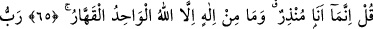
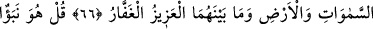
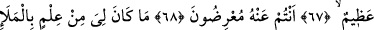
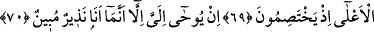

EN SADECE BİR UYARICIYIM
65. (Ya Muhammed!) De ki: Ben sadece bir uyarıcıyım. Tek ve kahredici olan
Allah’tan başka bir tanrı yoktur.
66. Göklerin, yerin ve ikisi arasında bulunanların Rabbi (olan Allah) üstündür,
çok bağışlayıcıdır.
67. De ki: Bu büyük bir haberdir.
68. Ama siz ondan yüz çeviriyorsunuz.
69. Onlar orada tartışırken benim mele-i a’lâ hakkında hiçbir bilgim yoktu.
70. Ben ancak apaçık bir uyarıcı olduğum için bana vahyolunuyor.
“(Ya Muhammed!)” Mekke müşriklerine “de ki: Ben” Allah Teâlâ’nın nezdinden
gönderilmiş “sadece bir uyarıcı” Rasûlüm. İnkâr edip mâsiyet işlediğiniz takdirde
O’nun azâbına dûçâr olacağınız hususunda sizleri uyarıp sakındırıyorum. Onlara şunu da
söyle ki varlıkta, hakkında ortaklık ve kesretin asla mümkün olmadığı, yâni ne zâtı ne
sıfatları ve ne de fiilleri bakımından hiçbir ortağı bulunmayan ve dolayısıyla da
kendisinden başka hiçbir melce’ ve sığınak olmayan O “tek ve” kendisi dışındaki -
aralarında kendi tanrılarının da bulunduğu- herşeyi “kahredici olan Allah’tan başka bir
tanrı yoktur.” O, hepsinin üstündedir. O halde O’nun nasıl olur da ortakları olabilir!
Yâni, yaptıkları mâsiyetler ve işledikleri günahlar yüzünden kullarını kahr u perişan
eden Allah’tan başka hiçbir ilah yoktur. Allah’ın tek olduğunu anlayan kimse, kalbini
sadece O’na has kılar ve O’nun sâyesinde tevhîde erer. Hz. Peygamber’in (s.a.)
“Şüphesiz Allah tekdir, teki (vitr) sever”[41] hadisi de sadece O’na mahsûs olan kalbi
sever, şeklinde tefsir edilmiştir.
Âşık olduğun bir varlık güzellikte tek ise
Gerçekten âşıksan, sen de tek ol onu sevmede.
Bu ismin (el-Kahhâr) özelliği, onu bin defa okuyanın kalbinden mâsivâyı (mahlûkât)
çıkarmasıdır.
Kâşifî der ki: O öyle bir kahredici (el-Kahhâr) ki emel ve arzuların binâsını ecel